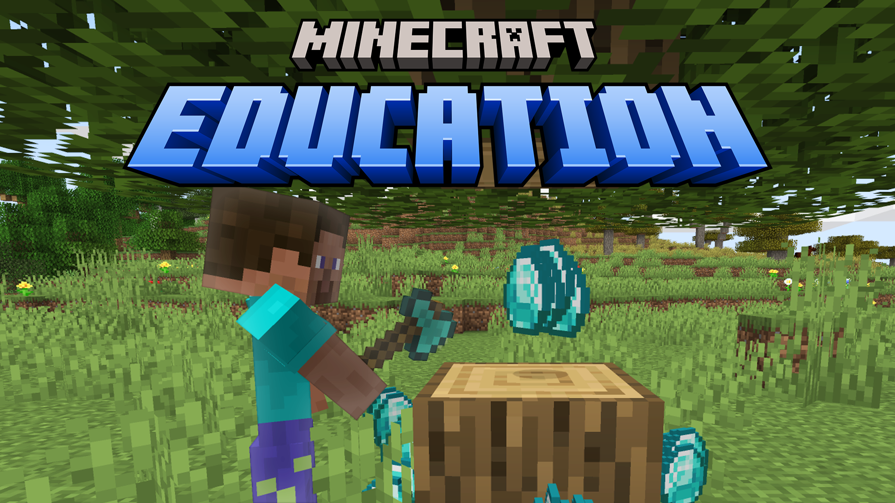

Minecraft tutorials
Watch the video and follow written instructions without switching tabs.
Choose a tutorial
Try “mods,” “experiments,” or “Education Edition.”
-

How To Get Mods/Addons in Minecraft Education Edition
-

Experimental Features
Enable them in your existing world or start with a ready-made world.
No matching tutorials yet. Try a shorter or more general search.